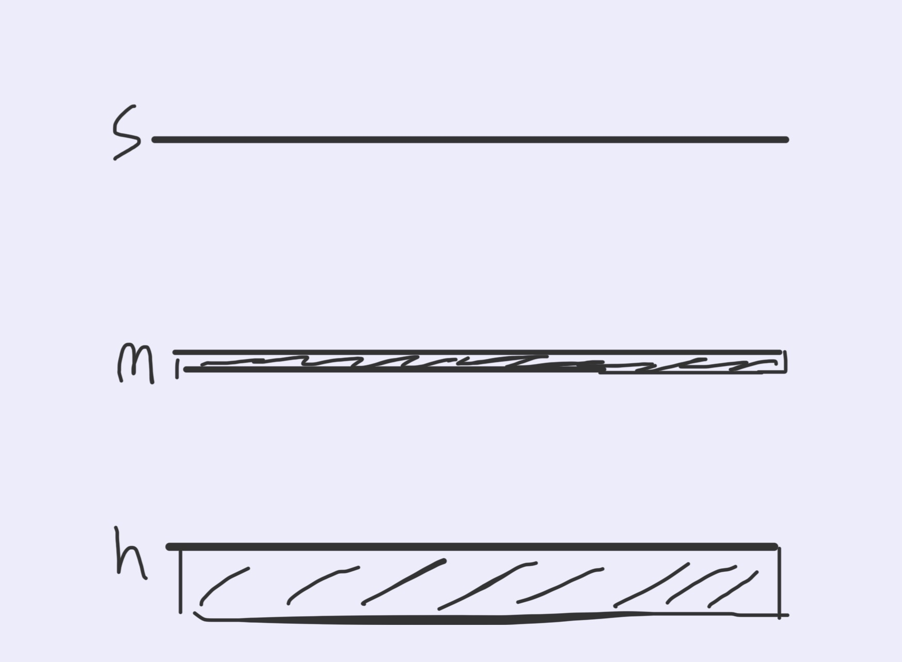

Inspired by PolarClock and bar charts, I created a horizontal abstract clock with three bars of different thicknesses representing seconds, minutes, and hours. The seconds appear as small blocks, with one new block added every second before resetting at the start of a new minute. The minute bar stays as one continuous shape, increasing in length each time a new minute begins and resetting at the start of a new hour. The hour bar adds a differently colored block at each new hour and resets at midnight. The blocks and colors make the passing time easier to count, while the continuous minute bar adds visual contrast.
